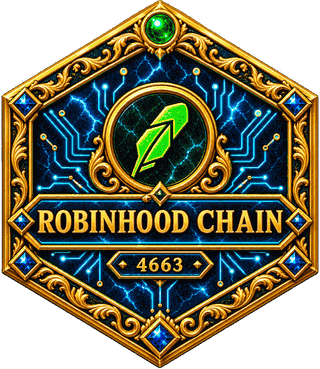
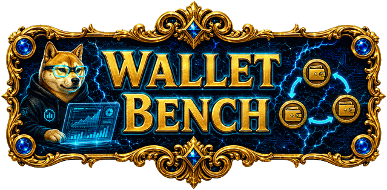

EVM

Wallet Bench
RPC not reached
One-Click Volume
Generate a master wallet, send it ETH (RH), then press PLAY. It spins up hidden wallets that buy $SWOGE and pass the funds around to make real on-chain volume — all in the background. Press STOP and everything — ETH (RH) and tokens — is swept back to your master wallet.
ETH (RH)
Not connected. You can also just send ETH (RH) to the address above from anywhere.
Smaller = more transactions. The pool’s 0.30 % is charged only on what you trade,
so a tiny trade leaves nothing to pay but the gas — and the gas is the same at any size.
These are brand-new addresses, not the hidden wallets above — you can ask for more
of them than the ring has. Their keys are saved on this device and downloaded as a
CSV before the first token is sent, so whatever gets sent stays recoverable. STOP
does not sweep them back: a holder that sold would not be a holder.
ETH (RH)
Load the token first (the panel below), then press Simulate —
the numbers come from the live pool depth and the network's current gas price.
No wallet on this device yet.
Idle.
⚠️ Real funds on a live chain — test with a tiny amount first. Manufacturing trading volume may break platform rules or local laws; only run it where you are authorised.
📖 First time? Read the full step-by-step guide →
Network
Generate
Add
Encrypted vault
Uniswap contracts
Token
Execution
Toggle Auto on a wallet's row, then hit Buy: it cycles buy → sell 100% → buy… until you press Stop loop or this limit is reached. Split, slippage and the Interval pause all apply. Every cycle is real, irreversible transactions.
Stops asking before each order until the page is reloaded. The summary still shows in the ligne.
The slider becomes the total budget. It is split into equal parts, then the plan stops.
Export
New here? $SWOGE is already loaded. Just: ① Generate a wallet → ② send it some ETH (RH) → ③ set your % and hit Buy. Switch to Advanced (top right) for slippage, contracts and split orders.
0
wallets to bench
0.000000
total balance
bench empty
Generate wallets or add an existing address to see its holdings.